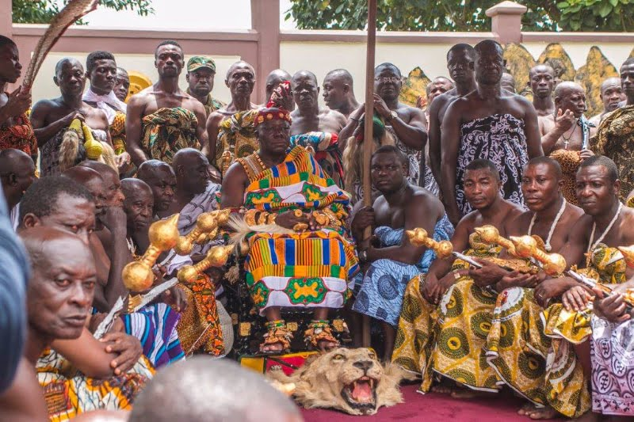
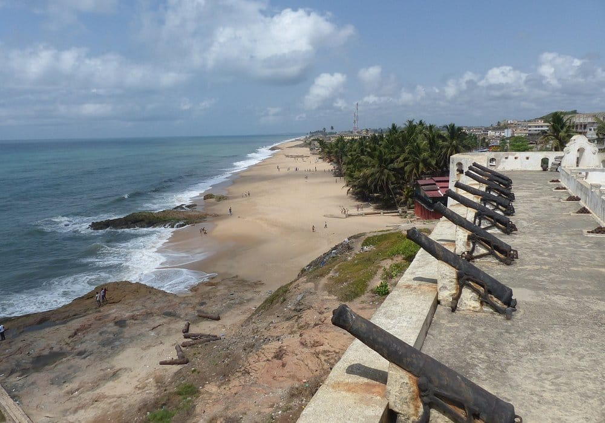

Considere começar sua viagem ao visitar o forte de Elmina e o Castelo de Cape Coast, que foram construídos pelos europeus para atuar como postos de comércio de ouro. Eles também acabaram sendo usados como depósitos de escravos. Essa triste história agora é lembrada em tours pelo castelo, que são acompanhados por guias locais.

Na esquerda é o Castelo de São Jorge da Mina em Elmina. Na direita é o Castelo da Costa do Cabo.
O Parque Nacional de Kakum, no norte de Cape Coast, é um dos melhores parques nacionais em Gana para se visitar. É possível caminhar em uma passarela sobre a copa das árvores da floresta, o que é uma experiência única e emocionante. O parque também é famoso por sua variada vida selvagem, como macacos e antílopes.

A região de Ashanti é conhecida por sua tradição histórica e cultural, especialmente com relação à produção de tecidos coloridos e artesanato. A cidade de Kumasi é o ponto de partida para os visitantes interessados em explorar as aldeias e mercados da região.
O Parque Nacional de Mole é o lar de leões, elefantes, búfalos, antílopes e girafas. Embora possa ser difícil avistar alguns animais, os safáris valerão a experiência. Você pode optar por um safári a pé ou de carro.
Accra é a capital do Gana e uma das maiores cidades do país. É uma cidade movimentada, com muito trânsito e multidões. A cidade oferece uma mistura única de atrações modernas e históricas, como os mercados locais e museus de história. Visite o Museu Nacional do Gana para ter uma ideia da história e cultura do país.


O Parque Nacional de Bia está localizado perto da fronteira com a Costa do Marfim e é um dos últimos pontos turísticos em desenvolvimento em Gana. Aqui, você encontrará florestas pluviais exuberantes, muitas cachoeiras e vistas deslumbrantes. O parque é lar de muitas espécies de animais, como macacos, antílopes e crocodilos.
Cape Coast é uma cidade costeira com uma atmosfera descontraída e agradável. Seu Patrimônio Mundial da UNESCO é o forte Elmina, que é um testemunho histórico da era do comércio de escravos. A cidade também tem uma praia excelente para quem gosta de surf, chamada Busua.
Takoradi é uma cidade portuária que tem experimentado um crescimento estendido na atividade comercial no litoral. Além de ser um importante centro industrial, a cidade possui algumas das melhores praias em Gana e uma atmosfera descontraída.